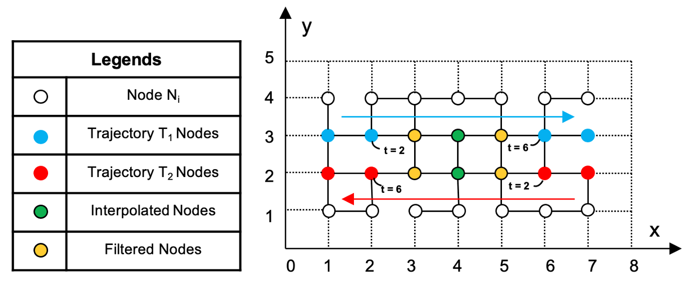
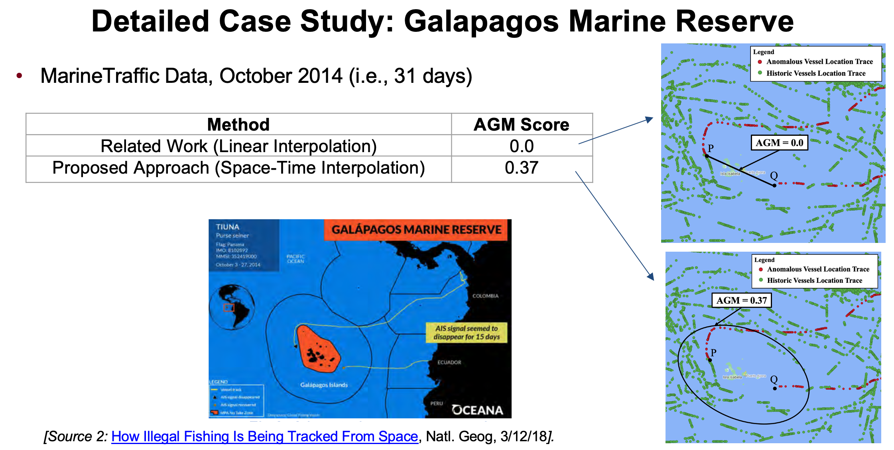
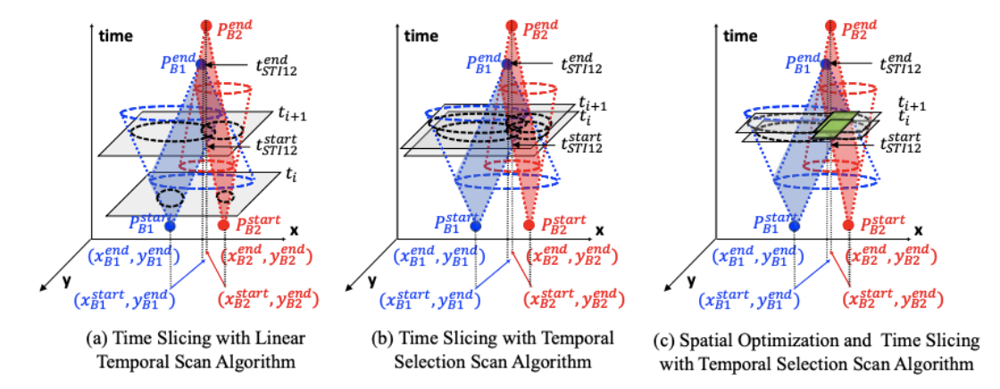
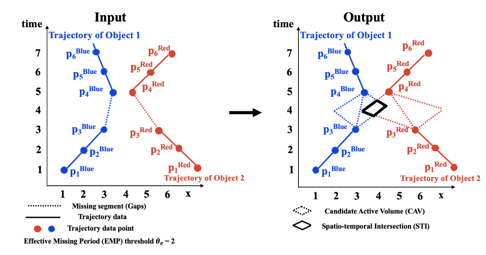

|
Hi there! I am a Ph.D. candidate in the Computer Science Department at University of Minnesota, Twin Cities advised by Prof. Shashi Shekhar. My research area span spatial data science, machine learning, uncertainty quantification, and geometric computing algorithms to solve previously unsolvable societal problems such as climate change, biodiversity, and others listed under the U.N. Sustainable Development Goals. I received his Master's in Computer Science from University at Buffalo in 2018. |

|
|
I am broadly interested in trajectory data mining in applications with real world societal problems. My research focuses on combining spatiotemporal data mining, time geography, and computational geometry. Here is some of my work: |
|  |
Arun Sharma, Jayant Gupta, Subhankar Ghosh 30th International Conference on Advances in Geographic Information Systems (SIGSPATIAL 2022) Given trajectories with gaps, we investigate methods to tighten spatial bounds on areas (e.g., nodes in a spatial network) where possible rendezvous activity could have occurred. The problem is important for reducing manual effort to post-process possible rendezvous areas using satellite imagery and has many societal applications to improve public safety, security, and health. The problem of rendezvous detection is challenging due to the difficulty of interpreting missing data within a trajectory gap and the very high cost of detecting gaps in such a large volume of location data. Most recent literature presents formal models, namely space-time prism, to track an object's rendezvous patterns within trajectory gaps on a spatial network. However, the bounds derived from the space-time prism are rather loose, resulting in unnecessarily extensive postprocessing manual effort. To address these limitations, we propose a Time Slicing-based Gap-Aware Rendezvous Detection (TGARD) algorithm to tighten the spatial bounds in spatial networks. We propose a Dual Convergence TGARD (DC-TGARD) algorithm to improve computational efficiency using a bi-directional pruning approach. Theoretical results show the proposed spatial bounds on the area of possible rendezvous are tighter than that from related work (space-time prism). Experimental results on synthetic and real-world spatial networks (e.g., road networks) show that the proposed DC-TGARD is more scalable than the TGARD algorithm. |
|  |
Arun Sharma, Jayant Gupta, Shashi Shekhar 15th International Conference on Spatial Information Theory (COSIT 2022) Given trajectories with gaps (i.e., missing data), we investigate algorithms to identify abnormal gaps for testing possible hypotheses of anomalous regions. Here, an abnormal gap within a trajectory is defined as an area where a given moving object did not report its location, but other moving objects did periodically. The problem is important due to its societal applications, such as improving maritime safety and regulatory enforcement for global security concerns such as illegal fishing, illegal oil transfer, and trans-shipments. The problem is challenging due to the difficulty of interpreting missing data within a trajectory gap, and the high computational cost of detecting gaps in such a large volume of location data proves computationally very expensive. The current literature assumes linear interpolation within gaps, which may not be able to detect abnormal gaps since objects within a given region may have traveled away from their shortest path. To overcome this limitation, we propose an abnormal gap detection (AGD) algorithm that leverages the concepts of a space-time prism model where we assume space-time interpolation. We then propose a refined memoized abnormal gap detection (Memo-AGD) algorithm that reduces comparison operations. We validated both algorithms using synthetic and real-world data. The results show that abnormal gaps detected by our algorithms give better estimates of abnormality than linear interpolation and can be used for further investigation from the human analysts. |
|  |
Arun Sharma Shashi Shekhar ACM Transactions in Intelligent Systems and Technology, 2021 (Accepted) Given trajectory data with gaps, we investigate methods to identify possible rendezvous regions. The problem has societal applications such as improving maritime safety and regulatory enforcement. The challenges come from two aspects. First, gaps in trajectory data make it difficult to identify regions where moving objects may have rendezvoused for nefarious reasons. Hence, traditional linear or shortest path interpolation methods may not be able to detect such activities, since objects in a rendezvous may have traveled away from their usual routes to meet. Second, user detecting a rendezvous regions involve a large number of gaps and associated trajectories, making the task computationally very expensive. In preliminary work, we proposed a more effective way of handling gaps and provided examples to illustrate potential rendezvous regions. In this article, we are providing detailed experiments with both synthetic and real-world data. Experiments on synthetic data show that the accuracy improved by 50 percent, which is substantial as compared to the baseline approach. In this article, we propose a refined algorithm Temporal Selection Search for finding a potential rendezvous region and finding an optimal temporal range to improve computational efficiency. We also incorporate two novel spatial filters: (i) a Static Ellipse Intersection Filter and (ii) a Dynamic Circle Intersection Spatial Filter. Both the baseline and proposed approaches account for every possible rendezvous pattern. We provide a theoretical evaluation of the algorithms correctness and completeness along with a time complexity analysis. Experimental results on synthetic and real-world maritime trajectory data show that the proposed approach substantially improves the area pruning effectiveness and computation time over the baseline technique. We also performed experiments based on accuracy and precision on synthetic dataset on both proposed and baseline techniques. |
|

|
Arun Sharma Xun Tang, Jayant Gupta, Majid Farhadloo, Shashi Shekhar GIScience 2021 paper Given trajectory data with gaps, we investigate methods to identify possible rendezvous regions. Societal applications include improving maritime safety and regulations. The challenges come from two aspects. If trajectory data are not available around the rendezvous then either linear or shortest-path interpolation may fail to detect the possible rendezvous. Furthermore, the problem is computationally expensive due to the large number of gaps and associated trajectories. In this paper, we first use the plane sweep algorithm as a baseline. Then we propose a new filtering framework using the concept of a space-time grid. Experimental results and case study on real-world maritime trajectory data show that the proposed approach substantially improves the Area Pruning Efficiency over the baseline technique. I've presented some of my work in GIS Day at UMD. |

|
Arun Sharma Syed Mohammed Arshad Zaidi, Varun Chandola, Melissa R Dumas, Budhendra L Bhaduri In Proceedings of 7th ACM SIGSPATIAL International Workshop on Analytics for Big Geospatial Data 2018 project page / paper / code A client-server framework deployed on a cloud infrastructure, allows for dynamic allocation of resources for running data intensive applications. We analyzed extreme high and low temprature events using Apache Spark. |
I've also served as Graduate Teaching Assistant to undergraduate and graduate level courses. The contributions varied from designing and grading exams to recitations and lectures. Here are the courses: